voltar
voltar
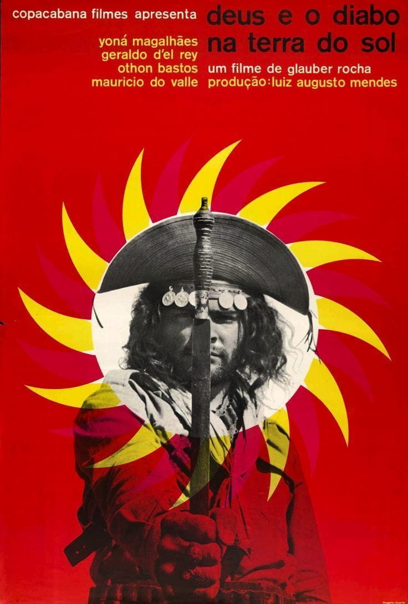
cartaz, 1964
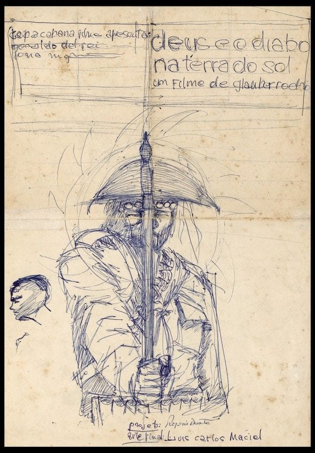
caneta sobre papel
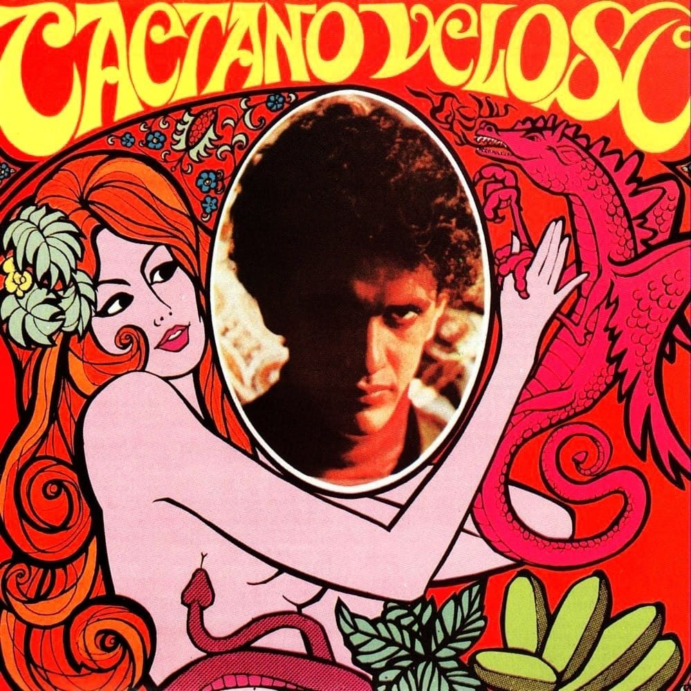
capa de disco, 1968
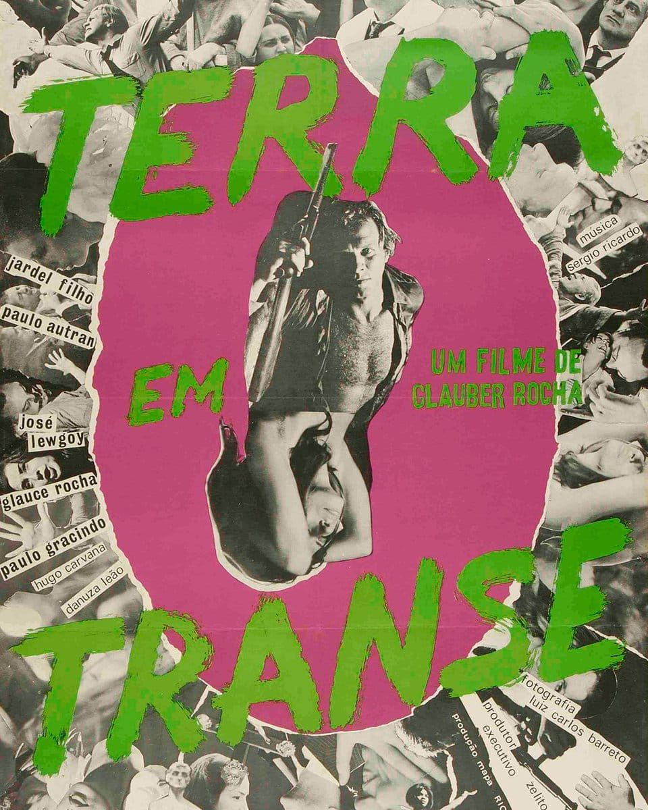
cartaz, 1967
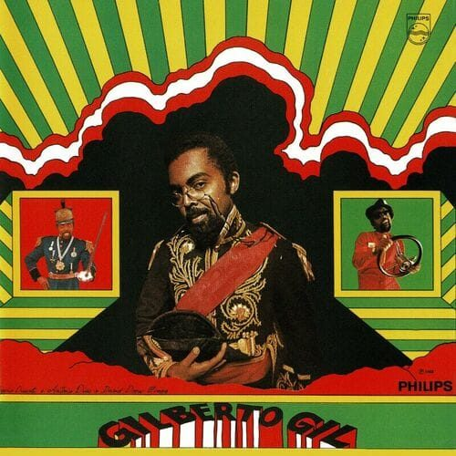
capa de disco, 1968
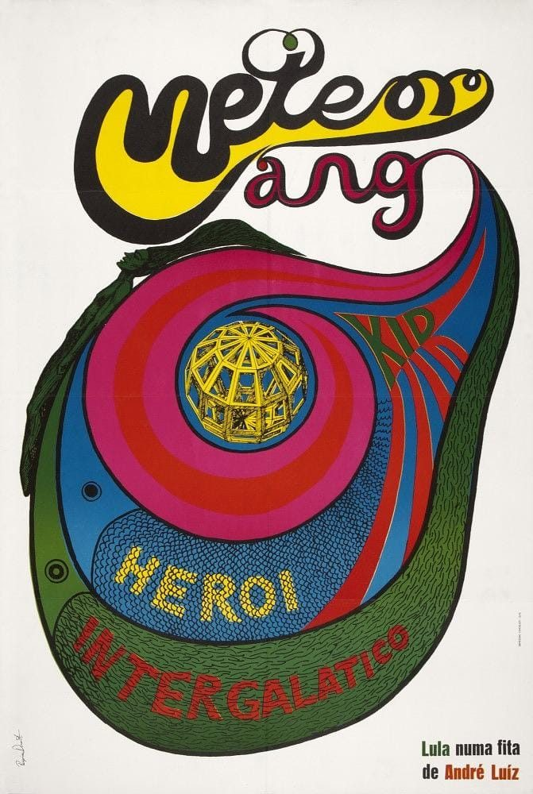
cartaz, 1969
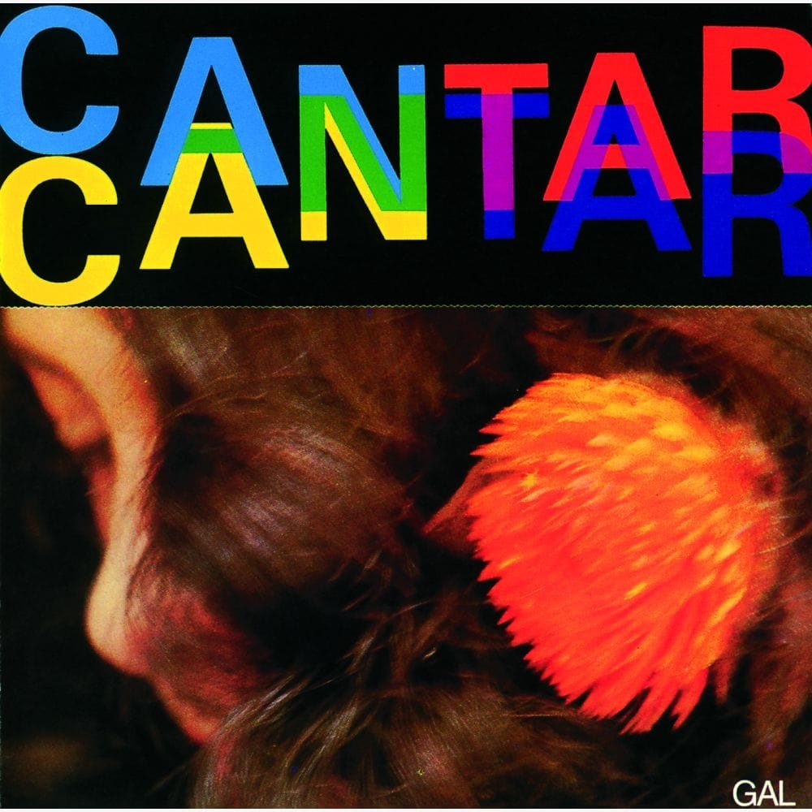
capa de disco, 1974
capa, 1962
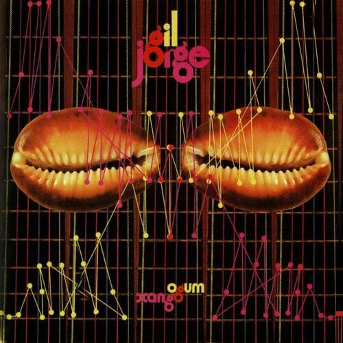
capa de disco, 1975
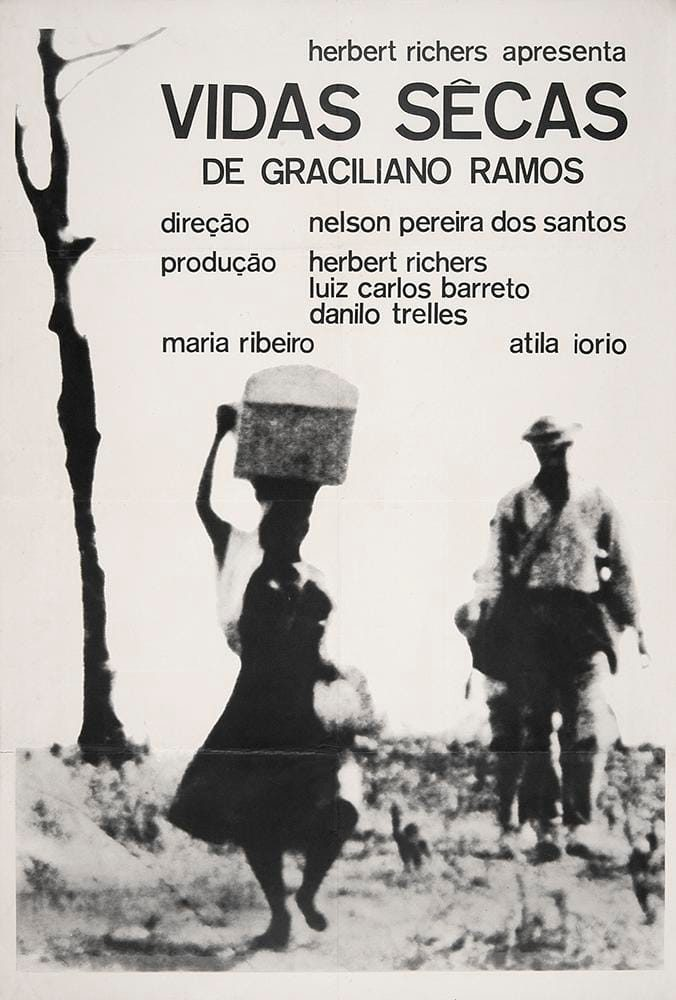
cartaz, 1963
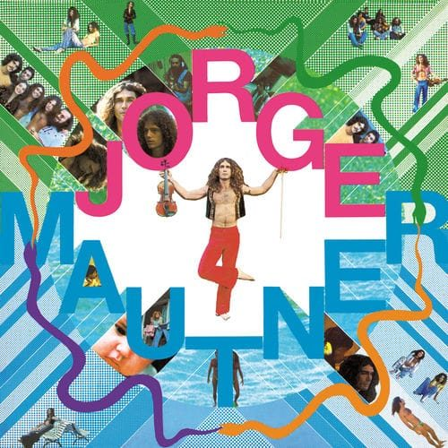
capa de disco
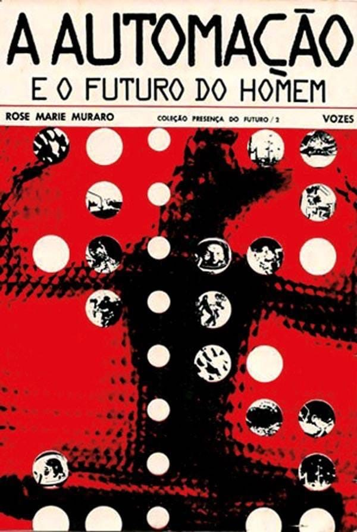
capa de livro
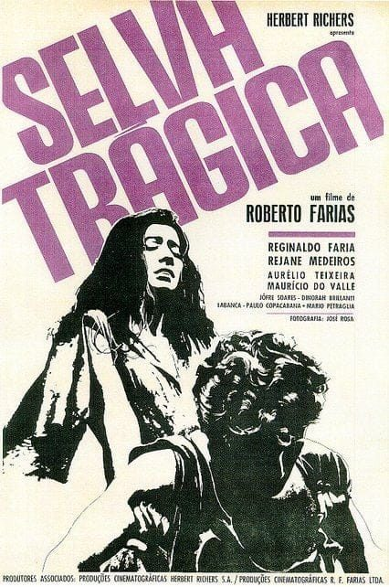
cartaz, 1964
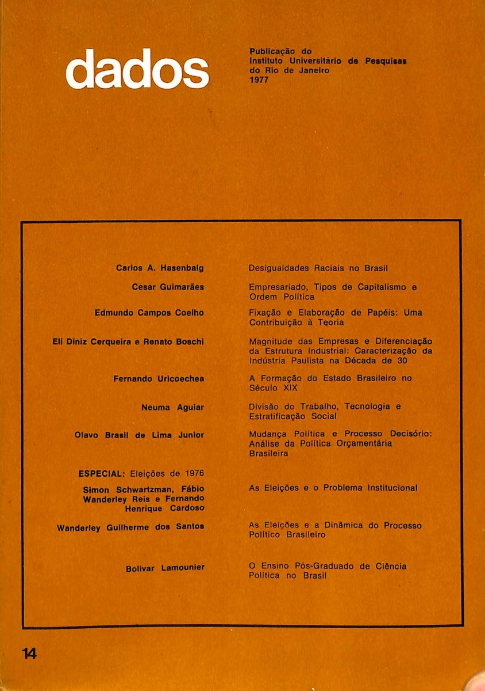
capa de revista, 1977
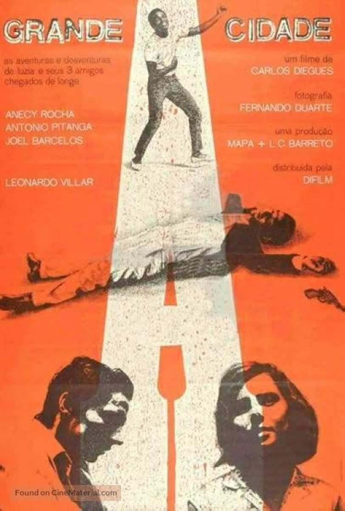
cartaz, 1966
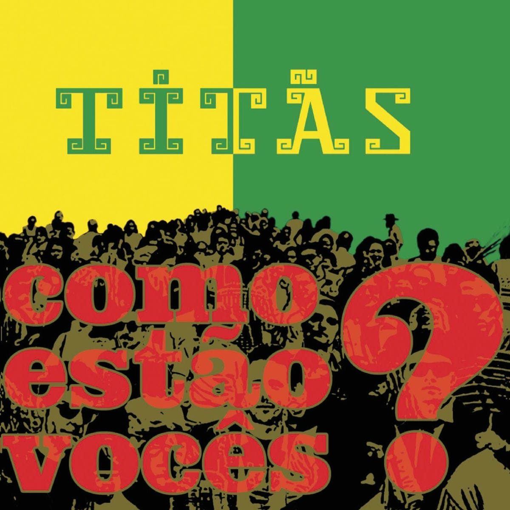
capa de disco, 2003
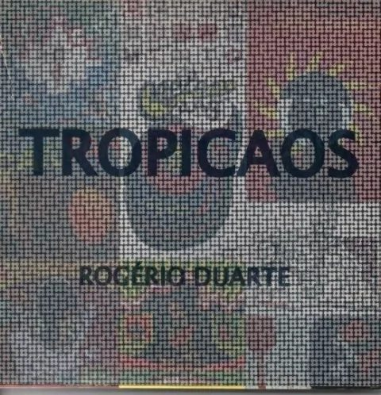
capa de livro